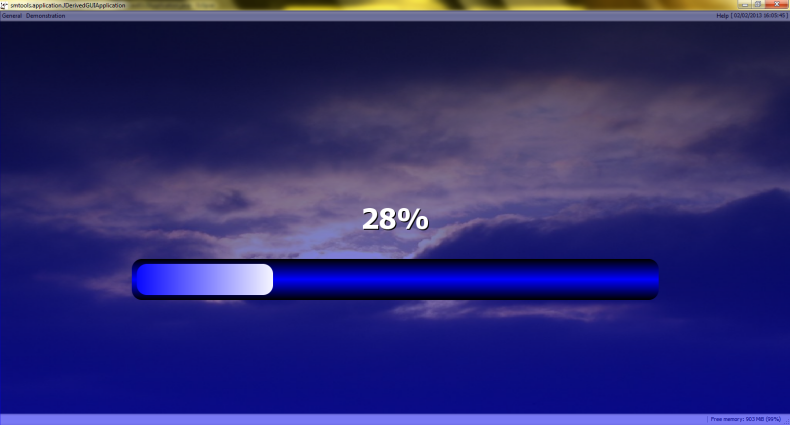
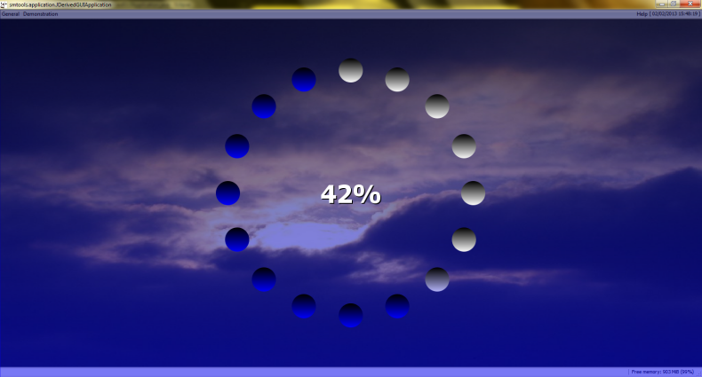
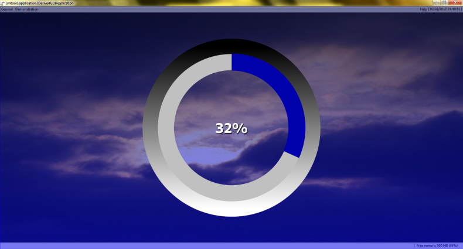
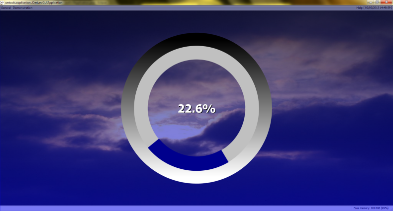

Package org.sm.smtools.application.util
Class JProgressUpdateGlassPane
java.lang.Object
java.awt.Component
java.awt.Container
javax.swing.JComponent
javax.swing.JPanel
org.sm.smtools.application.util.JProgressUpdateGlassPane
- All Implemented Interfaces:
java.awt.event.KeyListener,java.awt.event.MouseListener,java.awt.event.MouseMotionListener,java.awt.image.ImageObserver,java.awt.MenuContainer,java.io.Serializable,java.util.EventListener,javax.accessibility.Accessible
public class JProgressUpdateGlassPane
extends javax.swing.JPanel
implements java.awt.event.MouseListener, java.awt.event.MouseMotionListener, java.awt.event.KeyListener
The
JProgressUpdateGlassPane class provides the basic functionality for a progress updating glasspane.
In order to meaningfully use the progress updater, a user first has to set the total number of expected progress updates via
setTotalNrOfProgressUpdates(int). Each time an update is done, the user should call signalProgressUpdate()
which repaints the glasspane.
If needed, the glasspane can block the mouse and keyboard input to the GUI via the setBlocking(boolean) method.
Note that the menubar can still be accessed via its defined accelerator controls.
The following visualisations are supported:
Bar:

Circles:

Sector (fixed):

Sector (rotating):

- Version:
- 08/02/2015
- Author:
- Sven Maerivoet
- See Also:
- Serialized Form
-
Nested Class Summary
Nested Classes Modifier and Type Class Description static classJProgressUpdateGlassPane.EVisualisationTypeThe different types of progress update visualisations.Nested classes/interfaces inherited from class javax.swing.JPanel
javax.swing.JPanel.AccessibleJPanelNested classes/interfaces inherited from class javax.swing.JComponent
javax.swing.JComponent.AccessibleJComponentNested classes/interfaces inherited from class java.awt.Container
java.awt.Container.AccessibleAWTContainerNested classes/interfaces inherited from class java.awt.Component
java.awt.Component.AccessibleAWTComponent, java.awt.Component.BaselineResizeBehavior, java.awt.Component.BltBufferStrategy, java.awt.Component.FlipBufferStrategy -
Field Summary
Fields inherited from class javax.swing.JComponent
listenerList, TOOL_TIP_TEXT_KEY, ui, UNDEFINED_CONDITION, WHEN_ANCESTOR_OF_FOCUSED_COMPONENT, WHEN_FOCUSED, WHEN_IN_FOCUSED_WINDOWFields inherited from class java.awt.Component
accessibleContext, BOTTOM_ALIGNMENT, CENTER_ALIGNMENT, LEFT_ALIGNMENT, RIGHT_ALIGNMENT, TOP_ALIGNMENTFields inherited from interface java.awt.image.ImageObserver
ABORT, ALLBITS, ERROR, FRAMEBITS, HEIGHT, PROPERTIES, SOMEBITS, WIDTH -
Constructor Summary
Constructors Constructor Description JProgressUpdateGlassPane()Constructs an unblockingJProgressUpdateGlassPaneobject and resets it.JProgressUpdateGlassPane(JProgressUpdateGlassPane.EVisualisationType visualisationType, boolean showFractions)Constructs an unblockingJProgressUpdateGlassPaneobject and resets it. -
Method Summary
Modifier and Type Method Description voiddone()Resets the progress update glasspane and makes the glasspane invisible.doublegetPercentageCompleted()Returns the percentage completed.booleangetShowFractions()Returns whether or not fractions are shown in the percentage completed (not shown by default).JProgressUpdateGlassPane.EVisualisationTypegetVisualisationType()Returns the visualisation type to use.voidkeyPressed(java.awt.event.KeyEvent e)voidkeyReleased(java.awt.event.KeyEvent e)voidkeyTyped(java.awt.event.KeyEvent e)voidmouseClicked(java.awt.event.MouseEvent e)voidmouseDragged(java.awt.event.MouseEvent e)voidmouseEntered(java.awt.event.MouseEvent e)voidmouseExited(java.awt.event.MouseEvent e)voidmouseMoved(java.awt.event.MouseEvent e)voidmousePressed(java.awt.event.MouseEvent e)voidmouseReleased(java.awt.event.MouseEvent e)voidpaintComponent(java.awt.Graphics g)voidreset()Resets the progress update glasspane, by setting the percentage completed to zero and making the glasspane visible.voidsetBlocking(boolean blocking)Sets whether or not the glasspane should block all user mouse-input.voidsetFading(boolean fading)Sets whether or not fading is enabled.voidsetMessageText(java.lang.String messageText)Sets the optional message text.voidsetPercentageCompleted(double percentageCompleted)Directly sets the percentage completed.voidsetShowFractions(boolean showFractions)Sets whether or not fractions are shown in the percentage completed (not shown by default).voidsetShowTimeEstimation(boolean showTimeEstimation)Sets whether or not an estimation of the time left should be shown.voidsetTotalNrOfProgressUpdates(int totalNrOfProgressUpdates)Sets the total number of progress updates expected, corresponding to 100% completion.voidsetVisualisationType(JProgressUpdateGlassPane.EVisualisationType visualisationType)Sets the visualisation type to use.voidsignalProgressUpdate()Increases the number of progress updates already completed and repaints the glasspane.Methods inherited from class javax.swing.JPanel
getAccessibleContext, getUI, getUIClassID, paramString, setUI, updateUIMethods inherited from class javax.swing.JComponent
addAncestorListener, addNotify, addVetoableChangeListener, computeVisibleRect, contains, createToolTip, firePropertyChange, firePropertyChange, firePropertyChange, fireVetoableChange, getActionForKeyStroke, getActionMap, getAlignmentX, getAlignmentY, getAncestorListeners, getAutoscrolls, getBaseline, getBaselineResizeBehavior, getBorder, getBounds, getClientProperty, getComponentGraphics, getComponentPopupMenu, getConditionForKeyStroke, getDebugGraphicsOptions, getDefaultLocale, getFontMetrics, getGraphics, getHeight, getInheritsPopupMenu, getInputMap, getInputMap, getInputVerifier, getInsets, getInsets, getListeners, getLocation, getMaximumSize, getMinimumSize, getPopupLocation, getPreferredSize, getRegisteredKeyStrokes, getRootPane, getSize, getToolTipLocation, getToolTipText, getToolTipText, getTopLevelAncestor, getTransferHandler, getVerifyInputWhenFocusTarget, getVetoableChangeListeners, getVisibleRect, getWidth, getX, getY, grabFocus, isDoubleBuffered, isLightweightComponent, isOpaque, isOptimizedDrawingEnabled, isPaintingForPrint, isPaintingOrigin, isPaintingTile, isRequestFocusEnabled, isValidateRoot, paint, paintBorder, paintChildren, paintImmediately, paintImmediately, print, printAll, printBorder, printChildren, printComponent, processComponentKeyEvent, processKeyBinding, processKeyEvent, processMouseEvent, processMouseMotionEvent, putClientProperty, registerKeyboardAction, registerKeyboardAction, removeAncestorListener, removeNotify, removeVetoableChangeListener, repaint, repaint, requestFocus, requestFocus, requestFocusInWindow, requestFocusInWindow, resetKeyboardActions, revalidate, scrollRectToVisible, setActionMap, setAlignmentX, setAlignmentY, setAutoscrolls, setBackground, setBorder, setComponentPopupMenu, setDebugGraphicsOptions, setDefaultLocale, setDoubleBuffered, setEnabled, setFocusTraversalKeys, setFont, setForeground, setInheritsPopupMenu, setInputMap, setInputVerifier, setMaximumSize, setMinimumSize, setOpaque, setPreferredSize, setRequestFocusEnabled, setToolTipText, setTransferHandler, setUI, setVerifyInputWhenFocusTarget, setVisible, unregisterKeyboardAction, updateMethods inherited from class java.awt.Container
add, add, add, add, add, addContainerListener, addImpl, addPropertyChangeListener, addPropertyChangeListener, applyComponentOrientation, areFocusTraversalKeysSet, doLayout, findComponentAt, findComponentAt, getComponent, getComponentAt, getComponentAt, getComponentCount, getComponents, getComponentZOrder, getContainerListeners, getFocusTraversalKeys, getFocusTraversalPolicy, getLayout, getMousePosition, invalidate, isAncestorOf, isFocusCycleRoot, isFocusCycleRoot, isFocusTraversalPolicyProvider, isFocusTraversalPolicySet, list, list, paintComponents, printComponents, processContainerEvent, processEvent, remove, remove, removeAll, removeContainerListener, setComponentZOrder, setFocusCycleRoot, setFocusTraversalPolicy, setFocusTraversalPolicyProvider, setLayout, transferFocusDownCycle, validate, validateTreeMethods inherited from class java.awt.Component
add, addComponentListener, addFocusListener, addHierarchyBoundsListener, addHierarchyListener, addInputMethodListener, addKeyListener, addMouseListener, addMouseMotionListener, addMouseWheelListener, checkImage, checkImage, coalesceEvents, contains, createImage, createImage, createVolatileImage, createVolatileImage, disableEvents, dispatchEvent, enableEvents, enableInputMethods, firePropertyChange, firePropertyChange, firePropertyChange, firePropertyChange, firePropertyChange, firePropertyChange, getBackground, getBounds, getColorModel, getComponentListeners, getComponentOrientation, getCursor, getDropTarget, getFocusCycleRootAncestor, getFocusListeners, getFocusTraversalKeysEnabled, getFont, getForeground, getGraphicsConfiguration, getHierarchyBoundsListeners, getHierarchyListeners, getIgnoreRepaint, getInputContext, getInputMethodListeners, getInputMethodRequests, getKeyListeners, getLocale, getLocation, getLocationOnScreen, getMouseListeners, getMouseMotionListeners, getMousePosition, getMouseWheelListeners, getName, getParent, getPropertyChangeListeners, getPropertyChangeListeners, getSize, getToolkit, getTreeLock, hasFocus, imageUpdate, isBackgroundSet, isCursorSet, isDisplayable, isEnabled, isFocusable, isFocusOwner, isFontSet, isForegroundSet, isLightweight, isMaximumSizeSet, isMinimumSizeSet, isPreferredSizeSet, isShowing, isValid, isVisible, list, list, list, paintAll, prepareImage, prepareImage, processComponentEvent, processFocusEvent, processHierarchyBoundsEvent, processHierarchyEvent, processInputMethodEvent, processMouseWheelEvent, remove, removeComponentListener, removeFocusListener, removeHierarchyBoundsListener, removeHierarchyListener, removeInputMethodListener, removeKeyListener, removeMouseListener, removeMouseMotionListener, removeMouseWheelListener, removePropertyChangeListener, removePropertyChangeListener, repaint, repaint, repaint, requestFocus, requestFocus, requestFocusInWindow, setBounds, setBounds, setComponentOrientation, setCursor, setDropTarget, setFocusable, setFocusTraversalKeysEnabled, setIgnoreRepaint, setLocale, setLocation, setLocation, setMixingCutoutShape, setName, setSize, setSize, toString, transferFocus, transferFocusBackward, transferFocusUpCycleMethods inherited from class java.lang.Object
clone, equals, getClass, hashCode, notify, notifyAll, wait, wait, wait
-
Constructor Details
-
JProgressUpdateGlassPane
public JProgressUpdateGlassPane()Constructs an unblockingJProgressUpdateGlassPaneobject and resets it.A bar is used as the type of visualisation, fractions are not shown in the percentage completed.
-
JProgressUpdateGlassPane
public JProgressUpdateGlassPane(JProgressUpdateGlassPane.EVisualisationType visualisationType, boolean showFractions)Constructs an unblockingJProgressUpdateGlassPaneobject and resets it.- Parameters:
visualisationType- the type of the visualisation to showshowFractions- abooleanindicating whether or not fractions are shown in the percentage completed
-
-
Method Details
-
setFading
public final void setFading(boolean fading)Sets whether or not fading is enabled.- Parameters:
fading- abooleanspecifying whether fading is enabled or not
-
setShowTimeEstimation
public final void setShowTimeEstimation(boolean showTimeEstimation)Sets whether or not an estimation of the time left should be shown.- Parameters:
showTimeEstimation- abooleanspecifying whether or not an estimation of the time left should be shown
-
setVisualisationType
public final void setVisualisationType(JProgressUpdateGlassPane.EVisualisationType visualisationType)Sets the visualisation type to use.- Parameters:
visualisationType- the type of the visualisation to use
-
getVisualisationType
Returns the visualisation type to use.- Returns:
- the type of the visualisation to use
-
setShowFractions
public final void setShowFractions(boolean showFractions)Sets whether or not fractions are shown in the percentage completed (not shown by default).- Parameters:
showFractions- abooleanindicating whether or not fractions are shown in the percentage completed
-
getShowFractions
public final boolean getShowFractions()Returns whether or not fractions are shown in the percentage completed (not shown by default).- Returns:
- a
booleanindicating whether or not fractions are shown in the percentage completed
-
setMessageText
public final void setMessageText(java.lang.String messageText)Sets the optional message text.- Parameters:
messageText- the message text to show
-
reset
public final void reset()Resets the progress update glasspane, by setting the percentage completed to zero and making the glasspane visible. -
setTotalNrOfProgressUpdates
public final void setTotalNrOfProgressUpdates(int totalNrOfProgressUpdates)Sets the total number of progress updates expected, corresponding to 100% completion.- Parameters:
totalNrOfProgressUpdates- the total number of progress updates expected
-
signalProgressUpdate
public final void signalProgressUpdate()Increases the number of progress updates already completed and repaints the glasspane. -
setPercentageCompleted
public final void setPercentageCompleted(double percentageCompleted)Directly sets the percentage completed.- Parameters:
percentageCompleted- the percentage completed
-
getPercentageCompleted
public final double getPercentageCompleted()Returns the percentage completed.- Returns:
- the percentage completed
-
done
public final void done()Resets the progress update glasspane and makes the glasspane invisible. -
setBlocking
public final void setBlocking(boolean blocking)Sets whether or not the glasspane should block all user mouse-input.- Parameters:
blocking- abooleanthat indicates whether or not the glasspane should block all user mouse-input
-
paintComponent
public void paintComponent(java.awt.Graphics g)- Overrides:
paintComponentin classjavax.swing.JComponent
-
mouseClicked
public final void mouseClicked(java.awt.event.MouseEvent e)- Specified by:
mouseClickedin interfacejava.awt.event.MouseListener
-
mousePressed
public final void mousePressed(java.awt.event.MouseEvent e)- Specified by:
mousePressedin interfacejava.awt.event.MouseListener
-
mouseReleased
public final void mouseReleased(java.awt.event.MouseEvent e)- Specified by:
mouseReleasedin interfacejava.awt.event.MouseListener
-
mouseEntered
public final void mouseEntered(java.awt.event.MouseEvent e)- Specified by:
mouseEnteredin interfacejava.awt.event.MouseListener
-
mouseExited
public final void mouseExited(java.awt.event.MouseEvent e)- Specified by:
mouseExitedin interfacejava.awt.event.MouseListener
-
mouseMoved
public final void mouseMoved(java.awt.event.MouseEvent e)- Specified by:
mouseMovedin interfacejava.awt.event.MouseMotionListener
-
mouseDragged
public final void mouseDragged(java.awt.event.MouseEvent e)- Specified by:
mouseDraggedin interfacejava.awt.event.MouseMotionListener
-
keyPressed
public void keyPressed(java.awt.event.KeyEvent e)- Specified by:
keyPressedin interfacejava.awt.event.KeyListener
-
keyReleased
public void keyReleased(java.awt.event.KeyEvent e)- Specified by:
keyReleasedin interfacejava.awt.event.KeyListener
-
keyTyped
public void keyTyped(java.awt.event.KeyEvent e)- Specified by:
keyTypedin interfacejava.awt.event.KeyListener
-